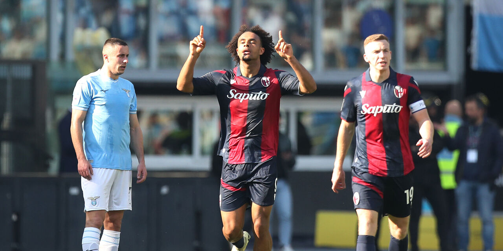

LEGHE FANTACALCIO
IL FANTASY GAME UFFICIALE DELLA SERIE A TIM
INIZIA A GIOCARE!
Il Fantacalcio in 2 modalità
CLASSIC
Il classico gioco del fantacalcio, arricchito dalla possibilità di giocare con
moduli personalizzabili
per Lega e di impostare numero di panchinari e ordine panchina secondo le proprie
preferenze,
insieme a centinaia di altre opzioni!
MANTRA
Un'esperienza di gioco coinvolgente e divertente con calciatori polivalenti,
specializzazione dei ruoli e moduli "reali" con enfatizzazione della componente
tattico-strategica.
Avanzato meccanismo di sostituzioni.
OPZIONI SU MISURA PER LA TUA LEGA!
CARATTERISTICHE DEL GIOCO
Clicca Mago Merlino per conoscere la sua previsione
sull'esito della tua giornata
al Fantacalcio!

Uno spazio esclusivo solo per la tua Lega per giocare con i tuoi amici da desktop, web mobile, app iOS e Android

Gestione automatizzata di calcoli e punteggi in un solo click

Voti LIVE! per seguire l'andamento della tua squadra in tempo reale

Centinaia di opzioni personalizzabili per assecondare le più svariate abitudini di gioco
Hai bisogno di aiuto?
oppure
Le ultime news di Fantacalcio.it

Allenamento mattutino per il Bologna: Zirkzee e Karlsson a parte.